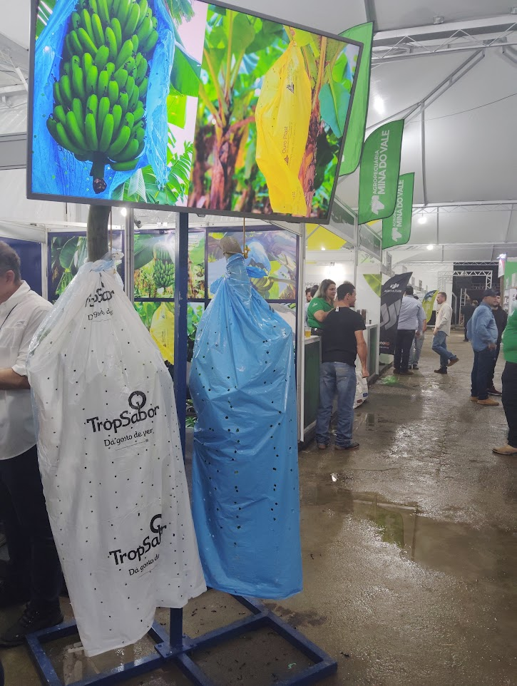
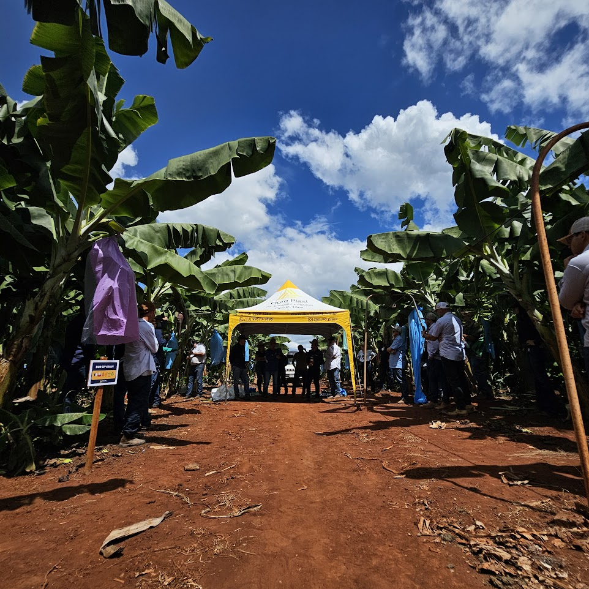
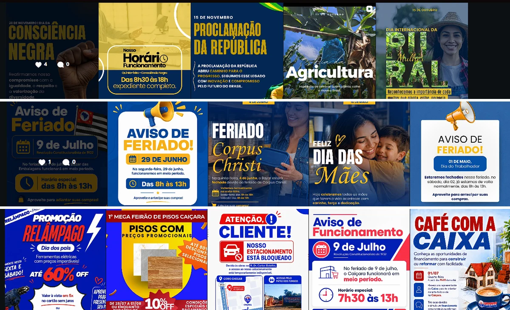

Antes da tecnologia
Minhas raízes em comunicação
Antes de migrar pra sistemas e processos, construí base em marketing e comunicação institucional, organizando eventos, criando materiais e cuidando do relacionamento com parceiros. É essa vivência que me ajuda hoje a explicar mudança técnica de um jeito que qualquer pessoa entende.

Estratégia de evento
Banatech
Planejamento, materiais e relacionamento com participantes.

Posicionamento de marca
Feibanana
Conteúdos e materiais visuais para feira do setor.

Relacionamento regional
Abanorte Fruit Connections
Materiais e organização de fornecedores.

Redes sociais
Conteúdo e rotina digital
Gestão de perfis e comunicação por público.